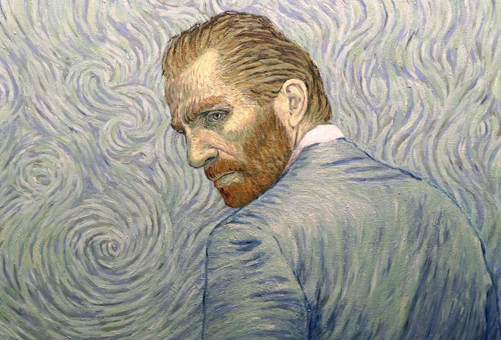

Vincent van Gogh
“Great things are not done by impulse, but by a series of small things brought together.”

Self portrait of Vincent van Gogh, one of the greatest Post-Impressionists.
🎨 The Painter's Biography 🎨
- 1853 March 30 — Vincent Van Gogh is born in Groot-Zundert, Netherlands
- 1864 - 1866 — Sent to boarding school in Zevenbergen
- 1869 — Van Gogh is employed by the Hague gallery
- 1873 — Van Gogh is transferred to London
- 1875 — Van Gogh is transferred to Paris
- 1876 - 1880 — Van Gogh begins devoting his life to the evangelization of the poor in the town of Borinage, Belgium
- 1880 - 1884 — Van Gogh relocates to Brussels and begins learning the skills needed to become an artist
- 1885 — Completion of The Potato Eaters
- 1886 — Van Gogh moves to Paris. Discovers Impressionists and Post Impressionists
- 1887 — Completion of Self Portrait with Straw Hat
- 1888 — Van Gogh moves to Arles to create a school of art
- 1888 — Van Gogh paints the famous sunflower pieces and begins suffering from mental problems
- 1888 — Completion of Starry Night Over the Rhone
- 1888 — Completion of The Café Terrace on the Place du Forum, Arles, at Night
- 1888 — Completion of Vincent's Bedroom in Arles
- 1888 — Van Gogh cuts off a portion of his ear and commits himself to a mental asylum in Saint Rémy
- 1888 — Ends his friendship with Gauguin
- 1889 — Completion of Irises
- 1889 — Completion of Starry Night
- 1890 — Completion of Almond Blossom
- 1890 — Van Gogh leaves Saint Rémy and begins contacting his brother Theo
- 1890 — Leaves the asylum to begin care in Auvers-sur-Oise under Dr. Paul Gachet, who was recommended by Camille Pissarro
- 1890 July 29 — Vincent Van Gogh dies of a self-inflicted gunshot. He was buried on July 30 at Auvers-sur-Oise
“It must be good to die in the knowledge that one has done some truthful work...and to know that, as a result, one will live on in the memory of at least a few and leave a good example for those who come after.”
— Vincent van Gogh (1853 - 1890)